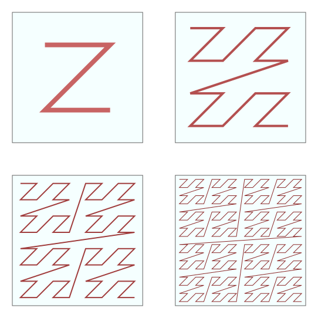

I'm going to try a few new things today.
First, I'm trying to write a post using the School of Haskell.
Second, I'm going to try to work through some code in a rather collaborative fashion. That is to say, I have a general idea of where I'm going and how to make it fast, but I have yet to do so and I'd like to actively encourage you to help me figure it out.
So, what are we hacking on?
I was recently reminded by Carter Schonwald about some properties of Morton ordering that turned out to be particularly relevant to sparse matrix multiplication. Along the way I discovered a particularly nice formulation of the problem, and I figured it would be a fun way to get my feet wet writing stuff here.
Hopefully, this series will have a bit of something for everybody: Some lenses, some bit bashing, worries about cache coherence, stream fusion, nice recursion patterns, finding simpler formulations for traditional algorithms, and general functional programming fun.
I'll also try to call out opportunities for readers to help as I go along. Particularly in the later parts, there will be a lot of room for improvement and many hands make light work!
The code for this project is available on github at github.com/ekmett/sparse if you are impatient and want to skip ahead. It isn't quite the last page in a murder mystery, and I haven't been shy about talking about this stuff, but I fully intend to crank away on development in there, so it may get pretty far in advance of these posts -- especially if you are late to the party!
Later on, we'll get to some numerics, and maybe they'll even perform decently, but today is mostly just setting up key space.
I'm hoping that by throwing open development a bit, I can help showcase a bit about how I think and attack a new problem as a Haskell programmer.
The latter parts are definitely currently unoptimized, but showcase what I think is a new technique (or at least a "new to me" technique) that I want to play with.
With all that out of the way, lets move on to
Morton Ordering
Morton ordering (aka the Z-curve) is a technique for getting cache locality in multiple dimensions by interleaving the bits of your different keys rather than storing them lexicographically. It was discovered way back in 1966, so I figured it was time to write up an article about it.

The idea is that instead of picking one of the keys to put first you interleave their bits. Now, you are in some sense slightly screwed up when it comes to sorting by either axis, but you're more or less equally screwed no matter which way you go, and you're less screwed than you would be if you were cutting row-wise across a column-major or column-wise across a row-major ordered version of things. In general you get to exploit locality in either dimension to some degree. The extra locality you get isn't as good as you can get with a proper Hilbert curve or with one of the other high end space filling curves, but those start requiring a lot more bit twiddling.
(If someone wants to follow along the later parts with a Hilbert or H curve and find where my tricks fail, I'd love to see the result!)
I want to work through how we can work with keys in Morton order in two ways. Today I'll walk through the first way.
Neither of these techniques is particularly new, but having at least one of them is necessary for what is to come.
Every Day I'm Shuffling
We can turn to Hacker's Delight to find a routine for interleaving the high and low parts of a word together.
unsigned shuffle1(unsigned x) {
// ------------------------------ cut ----------------------------------
x = (x & 0x0000FF00) << 8 | (x >> 8) & 0x0000FF00 | x & 0xFF0000FF;
x = (x & 0x00F000F0) << 4 | (x >> 4) & 0x00F000F0 | x & 0xF00FF00F;
x = (x & 0x0C0C0C0C) << 2 | (x >> 2) & 0x0C0C0C0C | x & 0xC3C3C3C3;
x = (x & 0x22222222) << 1 | (x >> 1) & 0x22222222 | x & 0x99999999;
// ---------------------------- end cut --------------------------------
return x;
}
What this does is take a bunch of bits like
abcd efgh ijkl mnop ABCD EFGH IJKL MNOP
and then shuffles them until they are fully interleaved in parallel within the word carefully.
abcd efgh ABCD EFGH ijkl mnop IJKL MNOP
abcd ABCD efgh EFGH ijkl IJKL mnop MNOP
abAB cdCD efEF ghGH ijIJ klKL mnMN opOP
aAbB cCdD eEfF gGhH iIjJ kKlL mMnN oOpP
We can view this technique perhaps as an early precursor to something out of the more the modern SWAR (SIMD within a register) toolbox, but we'll be doing everything by hand.
Now, I want to work with slightly larger keys, and I'd rather work in Haskell, so we can transcode that and reimplement it to work on larger word sizes with appropriate tweaks to the constants involved.
import Data.Bits
import Data.Word
import Control.Lens
import Numeric.Lens
shuffle :: Word64 -> Word64
shuffle k0 = k5 where
k1 = unsafeShiftL (k0 .&. 0x00000000FFFF0000) 16 .|. unsafeShiftR k0 16 .&. 0x00000000FFFF0000 .|. k0 .&. 0xFFFF00000000FFFF
k2 = unsafeShiftL (k1 .&. 0x0000FF000000FF00) 8 .|. unsafeShiftR k1 8 .&. 0x0000FF000000FF00 .|. k1 .&. 0xFF0000FFFF0000FF
k3 = unsafeShiftL (k2 .&. 0x00F000F000F000F0) 4 .|. unsafeShiftR k2 4 .&. 0x00F000F000F000F0 .|. k2 .&. 0xF00FF00FF00FF00F
k4 = unsafeShiftL (k3 .&. 0x0C0C0C0C0C0C0C0C) 2 .|. unsafeShiftR k3 2 .&. 0x0C0C0C0C0C0C0C0C .|. k3 .&. 0xC3C3C3C3C3C3C3C3
k5 = unsafeShiftL (k4 .&. 0x2222222222222222) 1 .|. unsafeShiftR k4 1 .&. 0x2222222222222222 .|. k4 .&. 0x9999999999999999
-- show main
main = print $ base 2 # shuffle 0x00000000FFFFFFFF
Now we can build our Key type:
newtype Key = Key Word64
key :: Word32 -> Word32 -> Key
key i j = Key $ shuffle $ unsafeShiftL (fromIntegral i) 32 .|. fromIntegral j
For convenience, it'd be nice to see what the key was originally to show it, and later on to be able to project it back out, so first, lets define an unshuffle.
import Data.Bits
import Data.Word
import Control.Lens
import Numeric.Lens
unshuffle :: Word64 -> Word64
unshuffle k0 = k5 where
t0 = xor k0 (unsafeShiftR k0 1 ) .&. 0x2222222222222222
k1 = k0 `xor` t0 `xor` unsafeShiftL t0 1
t1 = xor k1 (unsafeShiftR k1 2 ) .&. 0x0C0C0C0C0C0C0C0C
k2 = k1 `xor` t1 `xor` unsafeShiftL t1 2
t2 = xor k2 (unsafeShiftR k2 4 ) .&. 0x00F000F000F000F0
k3 = k2 `xor` t2 `xor` unsafeShiftL t2 4
t3 = xor k3 (unsafeShiftR k3 8 ) .&. 0x0000FF000000FF00
k4 = k3 `xor` t3 `xor` unsafeShiftL t3 8
t4 = xor k4 (unsafeShiftR k4 16) .&. 0x00000000FFFF0000
k5 = k4 `xor` t4 `xor` unsafeShiftL t4 16
{-# INLINE unshuffle #-}
-- show main
main = print $ base 2 # unshuffle 0xAAAAAAAAAAAAAAAA
No-Prize Opportunity #1:
There exists an
unshufflethat works much more likeshuffle! What is the definition? The first reader to email me a working version of it wins a No-Prize.[Edit: No-Prize #1 has been awarded to Sanjoy Das. However, riotnerd was the first to provide both a working unshuffle alongside the proof that they compose to identity and so he has earned an honorable mention. His presentation showed good style and demonstrated the equality via clean equational rewriting.]
unshuffle k0 = k5 where
k5 = unsafeShiftL (k4 .&. 0x00000000FFFF0000) 16 .|. unsafeShiftR k4 16 .&. 0x00000000FFFF0000 .|. k4 .&. 0xFFFF00000000FFFF
k4 = unsafeShiftL (k3 .&. 0x0000FF000000FF00) 8 .|. unsafeShiftR k3 8 .&. 0x0000FF000000FF00 .|. k3 .&. 0xFF0000FFFF0000FF
k3 = unsafeShiftL (k2 .&. 0x00F000F000F000F0) 4 .|. unsafeShiftR k2 4 .&. 0x00F000F000F000F0 .|. k2 .&. 0xF00FF00FF00FF00F
k2 = unsafeShiftL (k1 .&. 0x0C0C0C0C0C0C0C0C) 2 .|. unsafeShiftR k1 2 .&. 0x0C0C0C0C0C0C0C0C .|. k1 .&. 0xC3C3C3C3C3C3C3C3
k1 = unsafeShiftL (k0 .&. 0x2222222222222222) 1 .|. unsafeShiftR k0 1 .&. 0x2222222222222222 .|. k0 .&. 0x9999999999999999
Interestingly, with -fllvm, that change, and a high enough optimization level, GHC is smart enough to realize shuffle . unshuffle = id!
With that, we can implement
unkey :: Key -> (Word32, Word32)
Now, we have what we need to make an isomorphism.
We could define
keyed :: Iso' (Word32,Word32) Key
keyed = iso (uncurry key) unkey
and then we could expose field accessors that work like Key was a pair using the overloaded field accessors in lens:
instance Field1 Key Key Word32 Word32 where
_1 = from keyed._1
instance Field2 Key Key Word32 Word32 where
_2 = from keyed._2
With this we can take a key, and freely manipulate one side of it with the lens combinators. e.g.
key 100 200 ^. _2 = 200
key 100 200 & _2 .~ 300 = key 100 300
and we can use these to make a custom Show and Read for our Key type that isn't so eyebleedingly tough to read:
instance Show Key where
showsPrec d w = case unkey w of
(i,j) -> showParen (d > 10) $
showString "key " . Prelude.showsPrec 11 i .
showChar ' ' . Prelude.showsPrec 11 j
instance Read Key where
readsPrec d = readParen (d > 10) $ \r ->
[ (key i j, u)
| ("key",s) <- lex r
, (i,t) <- readsPrec 11 s
, (j,u) <- readsPrec 11 t
]
now most users don't need to care too much about the internal implementation of Key.
That said, we revisit our awesomely succinct implementation for _1 and _2 above, because we can implement _1 and _2 much more efficiently if we don't bother to shuffle and unshuffle the other side at all!
Fortunately, once again the Hacker's Delight has our backs.
This time I'm going to encode the indexed lens directly rather than compose it out of simpler pieces:
-- | Masks for the interleaved components of a key
m1, m2 :: Word64
m1 = 0xAAAAAAAAAAAAAAAA -- the mask for the first component of our key.
m2 = 0x5555555555555555 -- the mask for the second component of our key.
{-# INLINE m1 #-}
{-# INLINE m2 #-}
instance (a ~ Word32, b ~ Word32) => Field2 Key Key a b where
_2 f (Key ij) = indexed f (1 :: Int) (fromIntegral k5) <&> \j -> let
j0 = fromIntegral j
j1 = unsafeShiftL (j0 .&. 0x00000000FFFF0000) 16 .|. j0 .&. 0xFFFF00000000FFFF
j2 = unsafeShiftL (j1 .&. 0x0000FF000000FF00) 8 .|. j1 .&. 0xFF0000FFFF0000FF
j3 = unsafeShiftL (j2 .&. 0x00F000F000F000F0) 4 .|. j2 .&. 0xF00FF00FF00FF00F
j4 = unsafeShiftL (j3 .&. 0x0C0C0C0C0C0C0C0C) 2 .|. j3 .&. 0xC3C3C3C3C3C3C3C3
j5 = unsafeShiftL (j4 .&. 0x2222222222222222) 1 .|. j4 .&. 0x9999999999999999
in Key (ij .&. m1 .|. j5)
where
k0 = ij .&. m2
k1 = (unsafeShiftR k0 1 .|. k0) .&. 0x3333333333333333
k2 = (unsafeShiftR k1 2 .|. k1) .&. 0x0F0F0F0F0F0F0F0F
k3 = (unsafeShiftR k2 4 .|. k2) .&. 0x00FF00FF00FF00FF
k4 = (unsafeShiftR k3 8 .|. k3) .&. 0x0000FFFF0000FFFF
k5 = (unsafeShiftR k4 16 .|. k4) .&. 0x00000000FFFFFFFF
Here _2 is being made manually into an 'indexed lens' (really just to make the Field typeclass happy), it is always index 1, and it half-unshuffles out the right hand side of my Word64 to make a Word32 suitable for consumption, and when given a replacement, shuffles it into place, and masks off what it is replacing in the Key.
I had a slightly fiddly issue with the signature that arose, because I needed to use a type equality rather than the more obvious Field2 Key Key Word32 Word32 instance to make it so that (.~) selects the right instance.
Exercise: Try changing it to the obvious version in the module at the bottom of this file and see what happens to main!
No-Prize opportunity #2
I'm currently using the following definition for
_1, but what does a cleaner version that avoids the shifts oni5andk0with modified masks/shifts look like? Email me first with the answer for your No-Prize.instance (a ~ Word32, b ~ Word32) => Field2 Key Key a b where _1 f (Key ij) = indexed f (0 :: Int) (fromIntegral k5) <&> \i -> let i0 = fromIntegral i i1 = unsafeShiftL (i0 .&. 0x00000000FFFF0000) 16 .|. i0 .&. 0xFFFF00000000FFFF i2 = unsafeShiftL (i1 .&. 0x0000FF000000FF00) 8 .|. i1 .&. 0xFF0000FFFF0000FF i3 = unsafeShiftL (i2 .&. 0x00F000F000F000F0) 4 .|. i2 .&. 0xF00FF00FF00FF00F i4 = unsafeShiftL (i3 .&. 0x0C0C0C0C0C0C0C0C) 2 .|. i3 .&. 0xC3C3C3C3C3C3C3C3 i5 = unsafeShiftL (i4 .&. 0x2222222222222222) 1 .|. i4 .&. 0x9999999999999999 in Key (unsafeShiftL i5 1 .|. ij .&. m2) where k0 = unsafeShiftR (ij .&. m1) 1 k1 = (unsafeShiftR k0 1 .|. k0) .&. 0x3333333333333333 k2 = (unsafeShiftR k1 2 .|. k1) .&. 0x0F0F0F0F0F0F0F0F k3 = (unsafeShiftR k2 4 .|. k2) .&. 0x00FF00FF00FF00FF k4 = (unsafeShiftR k3 8 .|. k3) .&. 0x0000FFFF0000FFFF k5 = (unsafeShiftR k4 16 .|. k4) .&. 0x00000000FFFFFFFF[ Edit: No-Prize #2 is has been (partially!) awarded to Tim Newsham, who provided the solution by carefully working the shifts back through the masks after he was stymied in his quest for No-Prize #1 by being too late to the party. His solution resolves the shifts on
k5, but noti0. Can we do better? Why or why not? I also realize that in practice the reduction in constant sharing may likely outweigh the removal of the shift.]
instance (a ~ Word32, b ~ Word32) => Field2 Key Key a b where
_1 f (Key ij) = indexed f (0 :: Int) (fromIntegral k5) <&> \i -> let
i0 = fromIntegral i
i1 = unsafeShiftL (i0 .&. 0x00000000FFFF0000) 17 .|. i0 .&. 0xFFFE00000001FFFE
i2 = unsafeShiftL (i1 .&. 0x0000FF000000FF00) 9 .|. i1 .&. 0xFE0001FFFE0001FE
i3 = unsafeShiftL (i2 .&. 0x00F000F000F000F0) 5 .|. i2 .&. 0xE01FE01FE01FE01E
i4 = unsafeShiftL (i3 .&. 0x0C0C0C0C0C0C0C0C) 3 .|. i3 .&. 0x0F0F0F0F0F0F0F0E
i5 = unsafeShiftL (i4 .&. 0x2222222222222222) 2 .|. i4 .&. 0x3333333333333332
in Key (unsafeShiftL 1 i5 .|. ij .&. m2)
where
k0 = ij .&. m1
k1 = (unsafeShiftR k0 2 .|. k0) .&. 0x6666666666666666
k2 = (unsafeShiftR k1 3 .|. k1) .&. 0x1E1E1E1E1E1E1E1E
k3 = (unsafeShiftR k2 5 .|. k2) .&. 0x01FE01FE01FE01FE
k4 = (unsafeShiftR k3 9 .|. k3) .&. 0x0001FFFE0001FFFE
k5 = (unsafeShiftR k4 15 .|. k4) .&. 0x00000001FFFFFFFE
The current implementation of this code, with whatever changes have been made in the meantime, sans some cleanup for presentation is currently available as Sparse/Matrix/Key.hs.
Now we can compare two keys for Morton order just by embedding them and comparing them, but can we do better?
A Strange Game
I'll pick up next time with how we can compare two keys by their Morton ordering without actually performing the interleaving at all! This technique will be important in what is to come, even if we may not use it directly for the keys themselves.
Hopefully by parts 3 or 4 we'll be deep in the bowels of Vector carving up custom stream fusion combinators and rethinking whether we want to partition a matrix or "thin" it to build an efficient sparse matrix multiplication routine.
I've included a current copy of the Key code below as an active document with minor alterations to enable you to play with it interactively. (It has a few cosmetic differences from the code above.)
-Edward Kmett August 14th, 2013
-- show Sparse/Matrix/Key.hs
{-# LANGUAGE KindSignatures #-}
{-# LANGUAGE DefaultSignatures #-}
{-# LANGUAGE TypeFamilies #-}
{-# LANGUAGE FlexibleContexts #-}
{-# LANGUAGE FlexibleInstances #-}
{-# LANGUAGE UndecidableInstances #-}
{-# LANGUAGE MultiParamTypeClasses #-}
-----------------------------------------------------------------------------
-- |
-- Copyright : (C) 2013 Edward Kmett
-- License : BSD-style (see the file LICENSE)
-- Maintainer : Edward Kmett <ekmett@gmail.com>
-- Stability : experimental
-- Portability : non-portable
--
-- Keys in Morton order
--
-- This module provides combinators for shuffling together the bits of two
-- key components to get a key that is based on their interleaved bits.
--
-- See <http://en.wikipedia.org/wiki/Z-order_curve> for more information
-- about Morton order.
--
----------------------------------------------------------------------------
import Control.Lens
import Data.Bits
import Data.Word
-- * Morton Order
-- | @key i j@ interleaves the bits of the keys @i@ and @j@.
--
-- Keys are then just values sorted in \"Morton Order\".
newtype Key = Key { runKey :: Word64 }
deriving (Eq, Ord)
-- | Construct a key from a pair of indices.
--
-- @
-- key i j ^. _1 = i
-- key i j ^. _2 = j
-- @
key :: Word32 -> Word32 -> Key
key i j = Key k5 where
k0 = unsafeShiftL (fromIntegral i) 32 .|. fromIntegral j
k1 = unsafeShiftL (k0 .&. 0x00000000FFFF0000) 16 .|. unsafeShiftR k0 16 .&. 0x00000000FFFF0000 .|. k0 .&. 0xFFFF00000000FFFF
k2 = unsafeShiftL (k1 .&. 0x0000FF000000FF00) 8 .|. unsafeShiftR k1 8 .&. 0x0000FF000000FF00 .|. k1 .&. 0xFF0000FFFF0000FF
k3 = unsafeShiftL (k2 .&. 0x00F000F000F000F0) 4 .|. unsafeShiftR k2 4 .&. 0x00F000F000F000F0 .|. k2 .&. 0xF00FF00FF00FF00F
k4 = unsafeShiftL (k3 .&. 0x0C0C0C0C0C0C0C0C) 2 .|. unsafeShiftR k3 2 .&. 0x0C0C0C0C0C0C0C0C .|. k3 .&. 0xC3C3C3C3C3C3C3C3
k5 = unsafeShiftL (k4 .&. 0x2222222222222222) 1 .|. unsafeShiftR k4 1 .&. 0x2222222222222222 .|. k4 .&. 0x9999999999999999
{-# INLINE key #-}
-- | This isomorphism lets you build a key from a pair of indices.
--
-- @
-- key i j ≡ (i,j)^.shuffled
-- @
--
-- @
-- 'shuffled' . 'unshuffled' = 'id'
-- 'unshuffled' . 'shuffled' = 'id'
-- @
shuffled :: Iso' (Word32, Word32) Key
shuffled = iso (uncurry key) unshuffle
{-# INLINE shuffled #-}
-- | This isomorphism lets you build a pair of indices from a key.
unshuffled :: Iso' Key (Word32, Word32)
unshuffled = iso unshuffle (uncurry key)
{-# INLINE unshuffled #-}
unshuffle :: Key -> (Word32, Word32)
unshuffle (Key k0) = (fromIntegral (unsafeShiftR k5 32), fromIntegral k5) where
t0 = xor k0 (unsafeShiftR k0 1 ) .&. 0x2222222222222222
k1 = k0 `xor` t0 `xor` unsafeShiftL t0 1
t1 = xor k1 (unsafeShiftR k1 2 ) .&. 0x0C0C0C0C0C0C0C0C
k2 = k1 `xor` t1 `xor` unsafeShiftL t1 2
t2 = xor k2 (unsafeShiftR k2 4 ) .&. 0x00F000F000F000F0
k3 = k2 `xor` t2 `xor` unsafeShiftL t2 4
t3 = xor k3 (unsafeShiftR k3 8 ) .&. 0x0000FF000000FF00
k4 = k3 `xor` t3 `xor` unsafeShiftL t3 8
t4 = xor k4 (unsafeShiftR k4 16) .&. 0x00000000FFFF0000
k5 = k4 `xor` t4 `xor` unsafeShiftL t4 16
{-# INLINE unshuffle #-}
instance (a ~ Word32, b ~ Word32) => Field1 Key Key a b where
_1 f (Key ij) = indexed f (0 :: Int) (fromIntegral k5) <&> \i -> let
i0 = fromIntegral i
i1 = unsafeShiftL (i0 .&. 0x00000000FFFF0000) 16 .|. i0 .&. 0xFFFF00000000FFFF
i2 = unsafeShiftL (i1 .&. 0x0000FF000000FF00) 8 .|. i1 .&. 0xFF0000FFFF0000FF
i3 = unsafeShiftL (i2 .&. 0x00F000F000F000F0) 4 .|. i2 .&. 0xF00FF00FF00FF00F
i4 = unsafeShiftL (i3 .&. 0x0C0C0C0C0C0C0C0C) 2 .|. i3 .&. 0xC3C3C3C3C3C3C3C3
i5 = unsafeShiftL (i4 .&. 0x2222222222222222) 1 .|. i4 .&. 0x9999999999999999
in Key (unsafeShiftL i5 1 .|. ij .&. m2)
where
k0 = unsafeShiftR (ij .&. m1) 1
k1 = (unsafeShiftR k0 1 .|. k0) .&. 0x3333333333333333
k2 = (unsafeShiftR k1 2 .|. k1) .&. 0x0F0F0F0F0F0F0F0F
k3 = (unsafeShiftR k2 4 .|. k2) .&. 0x00FF00FF00FF00FF
k4 = (unsafeShiftR k3 8 .|. k3) .&. 0x0000FFFF0000FFFF
k5 = (unsafeShiftR k4 16 .|. k4) .&. 0x00000000FFFFFFFF
-- _1 = unshuffled._1 -- reference implementation
{-# INLINE _1 #-}
instance (a ~ Word32, b ~ Word32) => Field2 Key Key a b where
_2 f (Key ij) = indexed f (1 :: Int) (fromIntegral k5) <&> \j -> let
j0 = fromIntegral j
j1 = unsafeShiftL (j0 .&. 0x00000000FFFF0000) 16 .|. j0 .&. 0xFFFF00000000FFFF
j2 = unsafeShiftL (j1 .&. 0x0000FF000000FF00) 8 .|. j1 .&. 0xFF0000FFFF0000FF
j3 = unsafeShiftL (j2 .&. 0x00F000F000F000F0) 4 .|. j2 .&. 0xF00FF00FF00FF00F
j4 = unsafeShiftL (j3 .&. 0x0C0C0C0C0C0C0C0C) 2 .|. j3 .&. 0xC3C3C3C3C3C3C3C3
j5 = unsafeShiftL (j4 .&. 0x2222222222222222) 1 .|. j4 .&. 0x9999999999999999
in Key (ij .&. m1 .|. j5)
where
k0 = ij .&. m2
k1 = (unsafeShiftR k0 1 .|. k0) .&. 0x3333333333333333
k2 = (unsafeShiftR k1 2 .|. k1) .&. 0x0F0F0F0F0F0F0F0F
k3 = (unsafeShiftR k2 4 .|. k2) .&. 0x00FF00FF00FF00FF
k4 = (unsafeShiftR k3 8 .|. k3) .&. 0x0000FFFF0000FFFF
k5 = (unsafeShiftR k4 16 .|. k4) .&. 0x00000000FFFFFFFF
-- _2 = unshuffled._2 -- reference implementation
{-# INLINE _2 #-}
instance Show Key where
showsPrec d w = case unshuffle w of
(i,j) -> showParen (d > 10) $
showString "key " . Prelude.showsPrec 11 i .
showChar ' ' . Prelude.showsPrec 11 j
instance Read Key where
readsPrec d = readParen (d > 10) $ \r ->
[ (key i j, u)
| ("key",s) <- lex r
, (i,t) <- readsPrec 11 s
, (j,u) <- readsPrec 11 t
]
-- * Utilities
-- | Masks for the interleaved components of a key
m1, m2 :: Word64
m1 = 0xAAAAAAAAAAAAAAAA
m2 = 0x5555555555555555
{-# INLINE m1 #-}
{-# INLINE m2 #-}
-- show playground
main :: IO ()
main = do
print $ key 100 200 ^. _2
print $ key 100 200 & _1 .~ 300